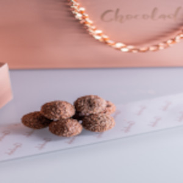

Ele é feito cozinhando leite condensado, manteiga e chocolate em pó até desgrudar da panela. Depois de frio, ele é enrolado em bolinhas e coberto com chocolate granulado
Em 1945, o Brasil vivia a primeira eleição presidencial após a ditadura de Getúlio Vargas. Um dos candidatos mais populares era o militar Eduardo Gomes, cuja patente na Aeronáutica era a de Brigadeiro.Ele tinha um forte fã-clube feminino no Rio de Janeiro. Para arrecadar fundos para a sua campanha eleitoral, um grupo de mulheres liderado pela doceira carioca Heloísa Nabuco de Oliveira decidiu criar um doce para vender nos comícios e chás beneficente
Seleção Doces & CIA